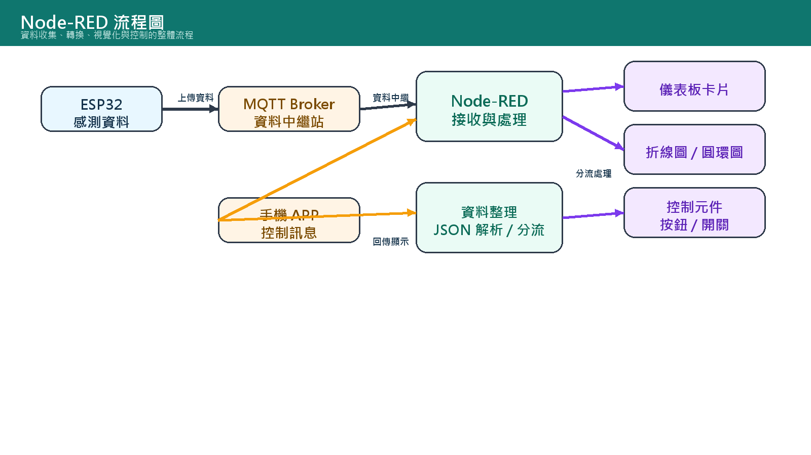
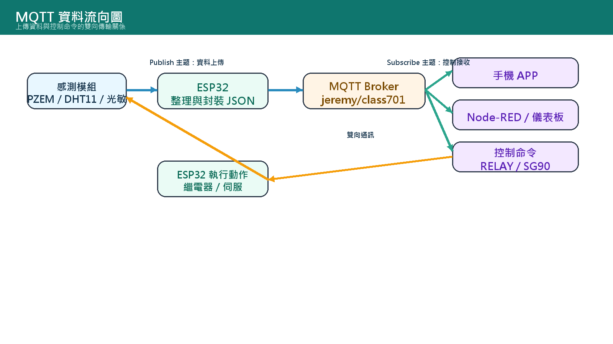
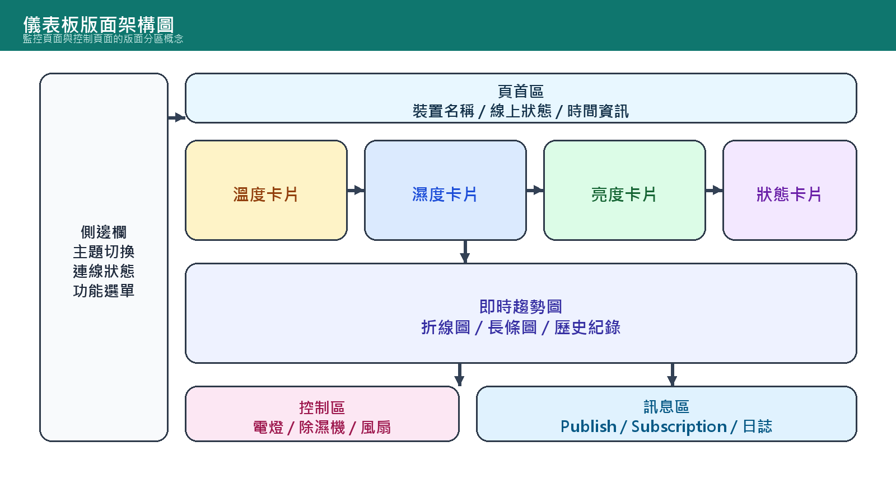
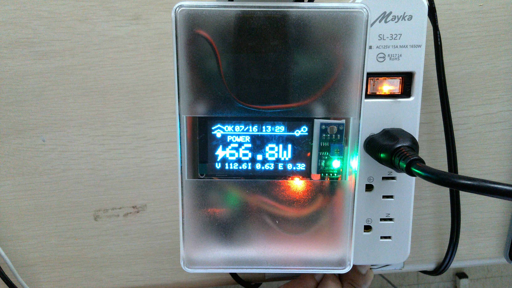
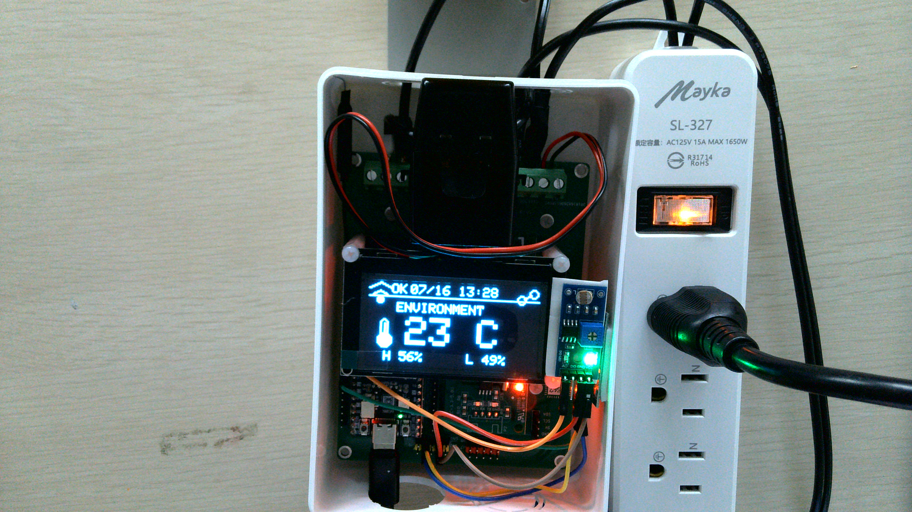
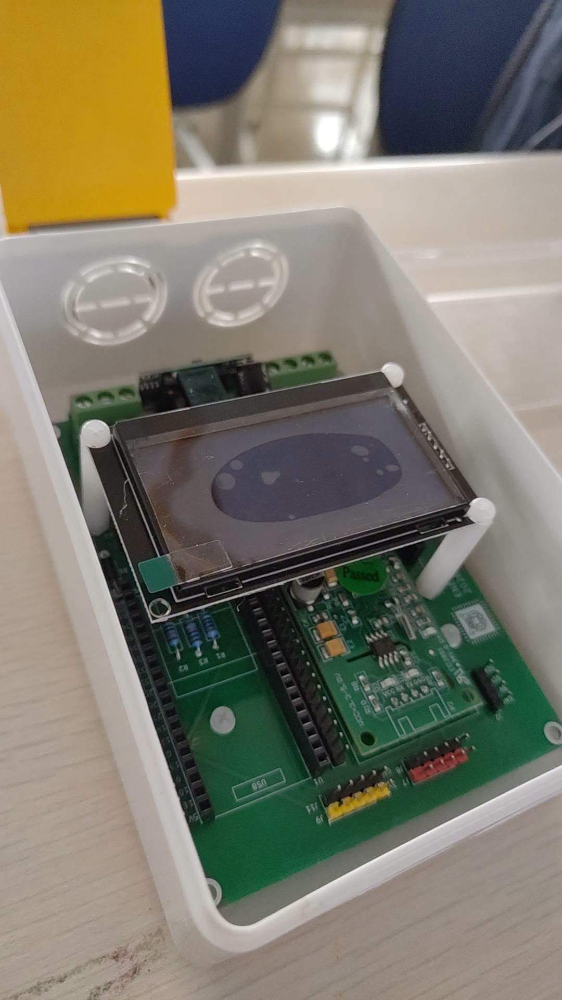
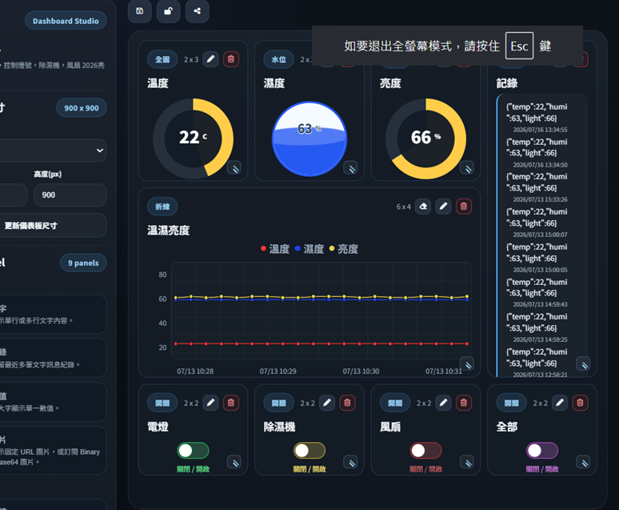
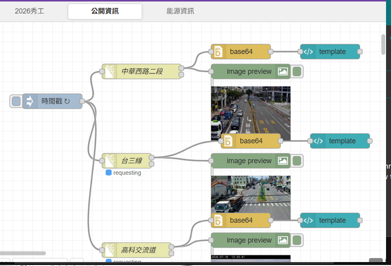
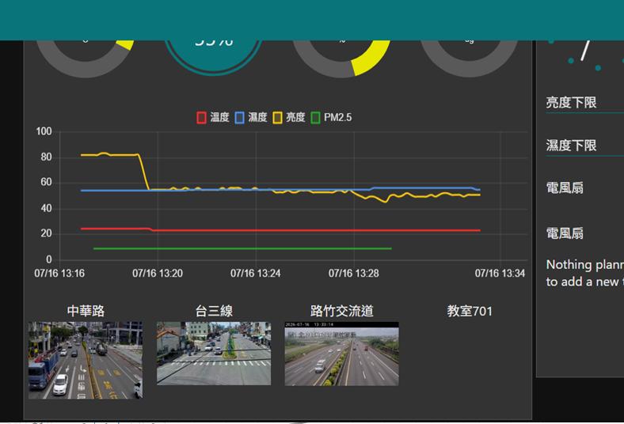

01
智慧電表
整合 PZEM-004T，讀取電壓、電流、功率、累積度數與功率因子。
這個網站展示本專案的最終成果：ESP32 感測整合、MQTT 雙向通訊、 OLED 三頁式介面、Node-RED 流程與儀表板，以及結案報告與實體成品。
從感測器到雲端，再回到控制端，形成完整的資料流。
整合 PZEM-004T，讀取電壓、電流、功率、累積度數與功率因子。
讀取 DHT11 與光敏電阻，顯示溫濕度與亮度，並同步送往雲端。
透過 MQTT 訂閱命令控制繼電器與 SG90，支援 callback 即時處理。
三頁輪播，包含用電資訊、環境資訊與系統狀態，畫面更易讀。
完成主控、PZEM-004T、DHT11、光敏電阻、繼電器與伺服的整體接線與整合，奠定專案硬體基礎。
建立 Wi-Fi、自動重連、MQTT 訂閱與發布流程，讓裝置能穩定送出資料並接收控制命令。
將電力、環境與系統狀態分頁顯示，提升可讀性，也讓現場展示更清楚直觀。
整合資料流、控制流程與圖表面板，完成手機與瀏覽器都可使用的監控介面。
把硬體、流程圖、照片與文件整理成 GitHub Pages 首頁，方便成品展示與後續維護。









複製 sketch/secrets.example.h 為 sketch/secrets.h，填入 Wi-Fi 與 MQTT 設定。
使用 Arduino IDE 或 Arduino CLI 開啟 sketch/20_oled_show.ino，選擇 ESP32 板型後上傳。
GitHub Pages 以同一個 repo 提供靜態網站，這個首頁已準備好可直接發布。